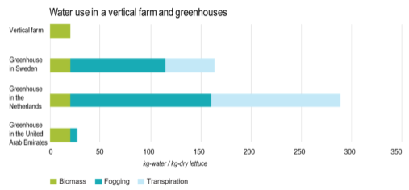

There are three main categories of vertical farming currently being used around the world: aeroponics, hydroponics, and aquaponics(NCAT, 2016). The main difference between these types of vertical farming is the medium in which the plants are grown. Aeroponics doesn’t use soil, it uses a reusable cloth and the plants are given their nutrients through a Root Misting System causing it to use 95% less water than regular farming. Hydroponics grows the plants in nutrient-rich water, this nutrient-rich water is usually put in by humans, the water that the plants are grown on can be recycled causing it to use less water than regular farming methods. Aquaponics is very similar to hydroponics, however, it uses animals, specifically fish to add nutrients to the water through their waste. The thing that holds aquaponics back is the number of factors that have to be controlled including the pH, calcium, Iron, and Potassium.
As of right now, vertical farming is a little more efficient than regular farming techniques (Figure 1), and since our city is short on space, vertical farming is the farming method implemented to lower the pressure on our land. The current problem with vertical farming is that the machinery used for vertical farming is not very power-efficient. Especially for Aeroponics since LEDs have to try to mimic the sun they are very energy-consuming. However, vertical farming has plenty of benefits including reduced runoff, higher nutrient products, and lots of investments (Earthbuddies, 2018).
For our city, we have implemented aeroponics as our main source of vegetables and fruits because it is currently the most researched type of vertical farming. Also, we are highly encouraging research in this area because only experts can grow some more complex crops such as berries and grain.
Figure 1. This figure represents the water usage between vertical farming and the greenhouses from three different countries, which have varying weather. Vertical farming maintains the same efficiency no matter where since it happens in a controlled environment (Graamans et al., 2018).
We make sure that everyone has enough food so no one has to worry about where their next meal will come from. Those who do not need it for free, can opt out and those who are financially struggling can get bigger rations.